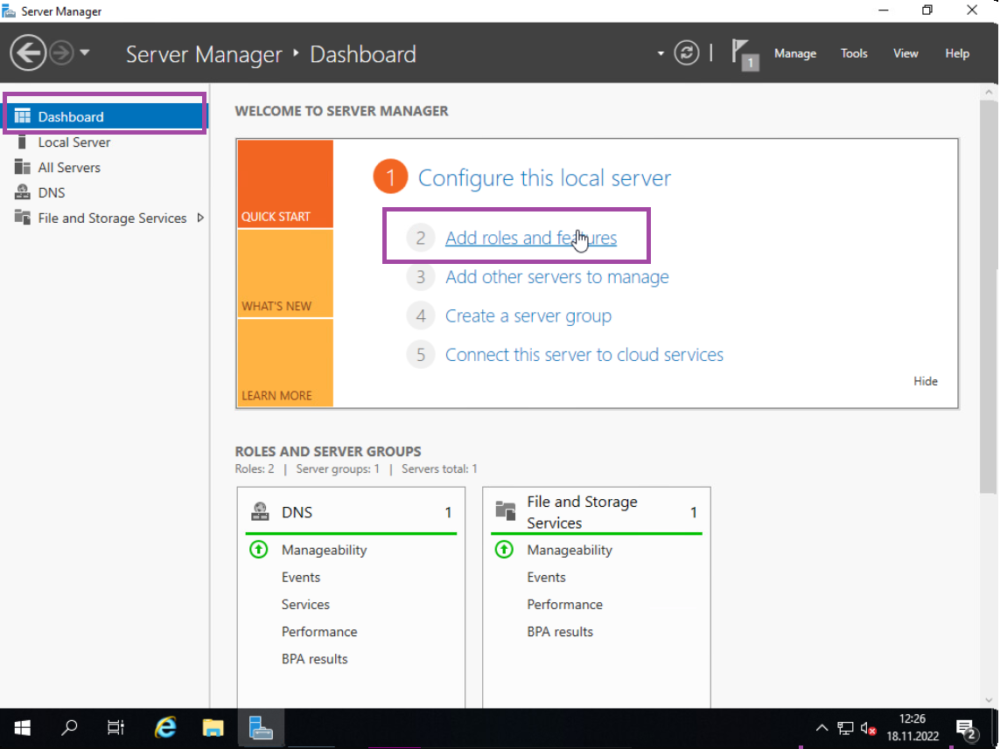
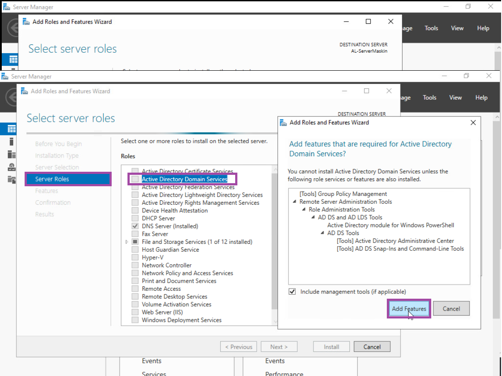
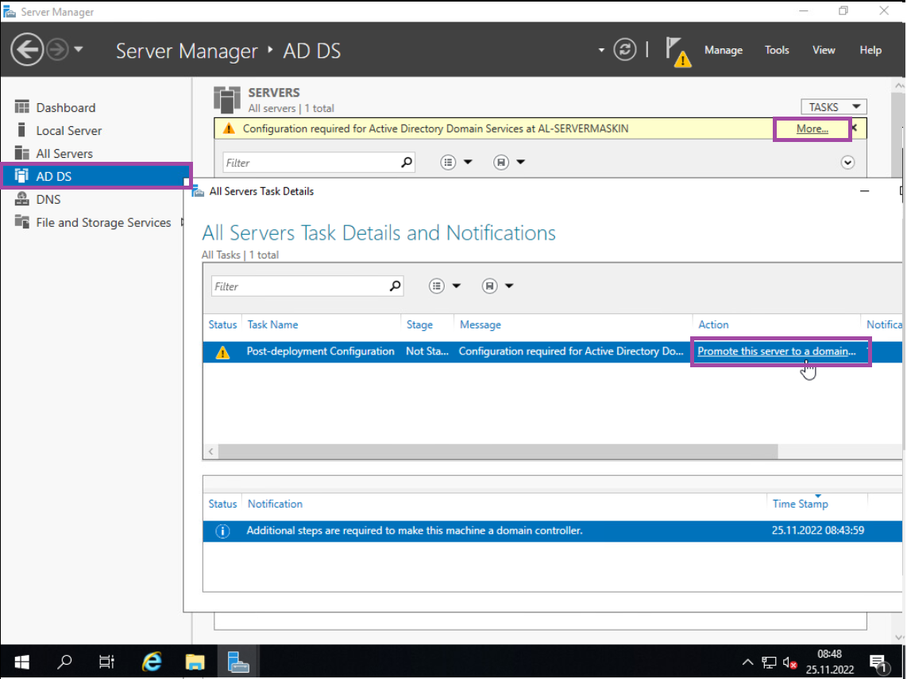
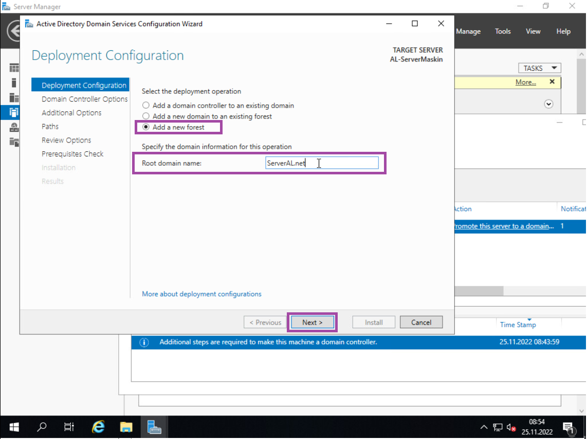
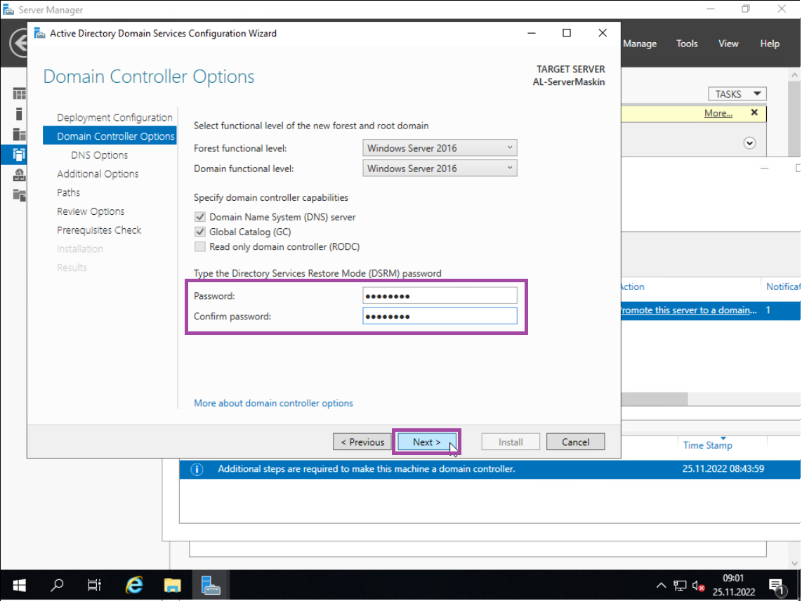
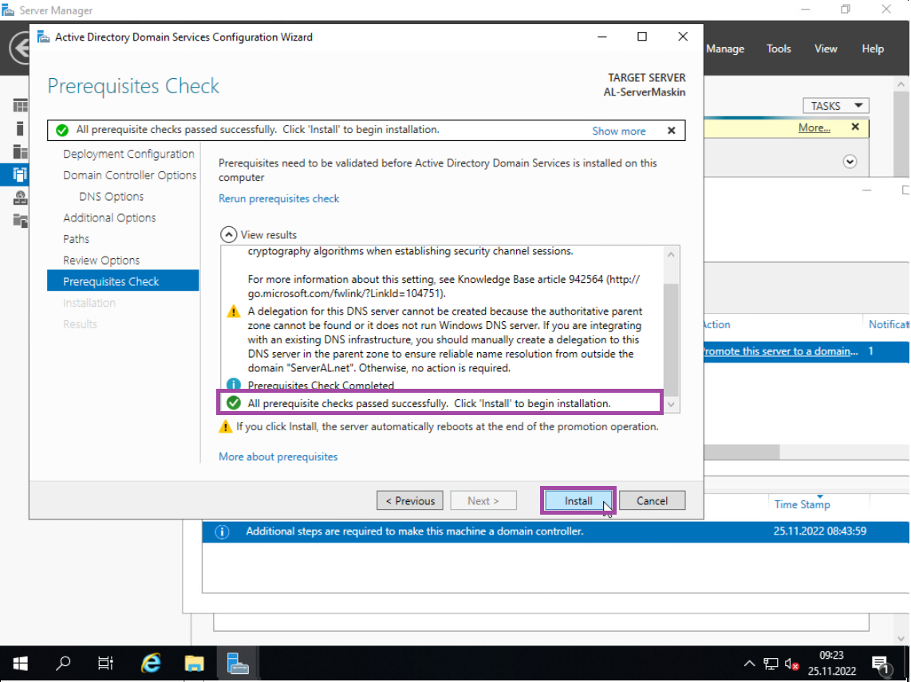

LAURIN LIMITED GUIDEBOOK ©
INSTALLERE ADDS
Nå skal vi installere ADDS (Active Diretory Domain Services). Dette gjør vi ved å navigere til Dashboard, så trykker du på «Add Roles and Features».
Naviger til «Server Roles», og trykk på «Active Directory Domain Services» i rolle listen. Så trykker du på «Add Features», og trykk på next helt til du kan trykke på install. (Trykk da på install når du kan)
Nå som ADDS er installert, så lukker du installisjons vinduet, og navigerer til «AD DS» fanen. Deretter så trykker du på «More…» som står sammen med den gule varsels boksen. Så burde du se denne fanen åpne, og trykk på «Promote this server to a domain…».
Når denne fanen åpner seg, så bør du allerede være på «Deployment Configuration», hvor du da skal trykke på «Add a new forest». Her kan du da skrive valgfritt root domene navn som du bør notere ned for senere. Dette er navnet vi må gi til klienten når den skal koble seg til domenet. Etter at du har skrevet inn domene navnet, så går vi videre ved å trykke på «Next».
Her på «Domain Controller Options», så lager du et passord, noter dette ned også. Deretter så trykker du på «Next» helt til du kommer til «Prerequisites Check».
Når du er på «Prerequisites Check», scroll ned på «View Result» lista og sjekk at den siste meldingen er grønn, slik som på bildet. Så trykker du på «Install». Når den er ferdig installert, så kommer serveren til å restarte seg selv, la den gjøre det.
Etter at serveren har startet på nytt, hvis brukernavnet ditt ser slikt ut (NETBIOS Navn\Konto Navn) og du kan logge deg in, så har AD DS blitt installert.

Fortsett til neste steg